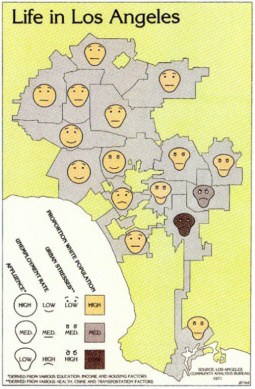

¡Hola 👋! Espera mientras comienza la sesión.
Antes que todo, ¿cómo están?
Visualización de Información
IIC2026 2021-2
Repaso general 18/11/2021
Visualización de Información
IIC2026 2021-2
Visualización de Información el último tiempo
Brushing, agregación y vistas en D3.js
Visualización de redes y grafos
Posicionamiento dirigido por fuerzas en D3
Abstracción de tareas
Visualización de jerarquía y árboles
Saltamos entre nivel 2, 3 y 4 del modelo
Caracterización de dominio
Abstracción de datos y tareas
Codificación visual y de interacción
Implementación algorítmica
Examen
Aplicar el modelo anidado para resolver un problema de visualización escogido por ustedes.
Examen
Aplicar el modelo anidado para resolver un problema de visualización escogido por ustedes.
Informe
Herramienta de visualización
Examen
Aplicar el modelo anidado para resolver un problema de visualización escogido por ustedes.
Informe
Caracterización de dominio
Abstracción de datos y tareas
Codificación visual y de interacción
Herramienta de visualización
Implementación algorítmica
Lo primero: escoger dataset y tema a trabajar
Lo primero: escoger dataset y tema a trabajar
¿Deben ser datos que encuentre en la web/internet? ¿Pueden ser datos sobre mi?
Lo primero: escoger dataset y tema a trabajar
¿Deben ser datos que encuentre en la web/internet? ¿Pueden ser datos sobre mi?
¿Puedo pre-procesar los datos a mi gusto con otra herramienta?
Lo primero: escoger dataset y tema a trabajar
¿Deben ser datos que encuentre en la web/internet? ¿Pueden ser datos sobre mi?
¿Puedo pre-procesar los datos a mi gusto con otra herramienta?
No sabría como definir un potencial usuario y posible uso. ¿Qué me recomienda?
Caracterización de dominio
- Entender el campo de conocimiento y contexto de aplicación
- Entender datos, usuarios y tareas. OJO: no abstraer aún.
Caracterización de dominio
Abstracción de datos y tareas
Codificación visual y de interacción
Implementación algorítmica
Abstracción de datos y tareas
- Traer las particularidades del contexto al mismo lenguaje.
- Definir el qué y por qué de la herramienta.
- Seleccionar los aspectos a consideración.
Caracterización de dominio
Abstracción de datos y tareas
Codificación visual y de interacción
Implementación algorítmica
Importante: Articular y ordenar su informe alrededor de tres tareas principales a resolver
Importante: Articular y ordenar su informe alrededor de tres tareas principales a resolver
Ordenar informe por secciones del modelo anidado
Codificación visual y de interacción
- Definir el cómo.
- Idiom: enfoque distintivo de codificar información o manipularla.
- Hay decisiones visuales y decisiones de interacción.
Caracterización de dominio
Abstracción de datos y tareas
Codificación visual y de interacción
Implementación algorítmica
Codificaciones visuales
Percepción
Color
Principios de diseño
Visualización de datos tabulares
Visualización de datos espaciales
Manipulación de vista
Facet
Reducción de datos
Visualización de redes y grafos
Visualización de jerarquía y árboles
Implementación algorítmica
- Código: tecnologías web + D3.js
- Resultado: una herramienta autocontenida.
Caracterización de dominio
Abstracción de datos y tareas
Codificación visual y de interacción
Implementación algorítmica
Intro a la web: HTML, CSS y SVG
Intro a la web: JS y D3
Selecciones y join de datos en D3
Utilidades de D3 I
Utilidades de D3 II
Layouts tabulares en D3
Zooming y panning en D3
Brushing, agregación y vistas en D3.js
Posicionamiento dirigido por fuerzas en D3
Si sigues con dudas de D3.js, vuelve a las cápsulas básicas
Próximamente
Validación en Visualización de Información
Sesiones de trabajo en examen
¡Visualización del día!

Life in Los Angeles by Eugene Turner, 1977.
Propuesta por entidad anónima.
(Fuente: ICA Commisions of Map Design)
Próximos eventos:
Estamos en plazo de realización de Examen, el que termina este jueves 2 de diciembre.
¡Queda la última sesión de contenidos de material (remota)! Validación en visualización (martes 23).
Hito 2 están en proceso de corrección. Cuestionarios hay suficientes para pasar el requisito de revisión de material.
Luego vienen sesiones de trabajo de examen. Potencialmente tendremos sesiones con presencialidad que avisaremos apenas podamos.
Repaso general 18/11/2021
Visualización de Información
IIC2026 2021-2
¡Nos vemos!